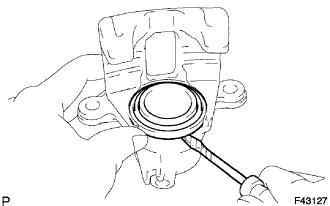
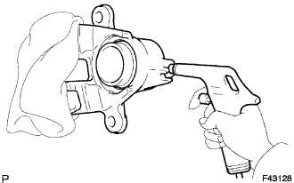
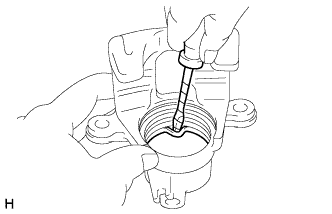

ЗАДНИЙ ТОРМОЗ > РАЗБОРКА |
| 1. СНИМИТЕ ЗАЩИТНЫЙ КОЛПАЧОК ЦИЛИНДРА |
|  |
С помощью отвертки снимите защитный колпачок с колесного тормозного цилиндра заднего дискового тормоза.
| 2. СНИМИТЕ ПОРШЕНЬ ЗАДНЕГО ДИСКОВОГО ТОРМОЗА |
|  |
Поместите ткань или аналогичное средство между поршнем тормозного цилиндра заднего дискового тормоза и колесным тормозным цилиндром заднего дискового тормоза.
С помощью сжатого воздуха извлеките поршень тормозного цилиндра заднего дискового тормоза из колесного тормозного цилиндра заднего дискового тормоза.
| 3. СНИМИТЕ УПЛОТНЕНИЕ ПОРШНЯ |
|  |
С помощью отвертки снимите уплотнение поршня с цилиндра заднего дискового тормоза.
| 4. СНИМИТЕ КОЛПАЧОК ПРОКАЧНОГО ШТУЦЕРА ЗАДНЕГО ДИСКОВОГО ТОРМОЗА |
| 5. СНИМИТЕ ПРОКАЧНОЙ ШТУЦЕР ЗАДНЕГО ДИСКОВОГО ТОРМОЗА |
Снимите прокачной штуцер с колесного тормозного цилиндра заднего дискового тормоза.